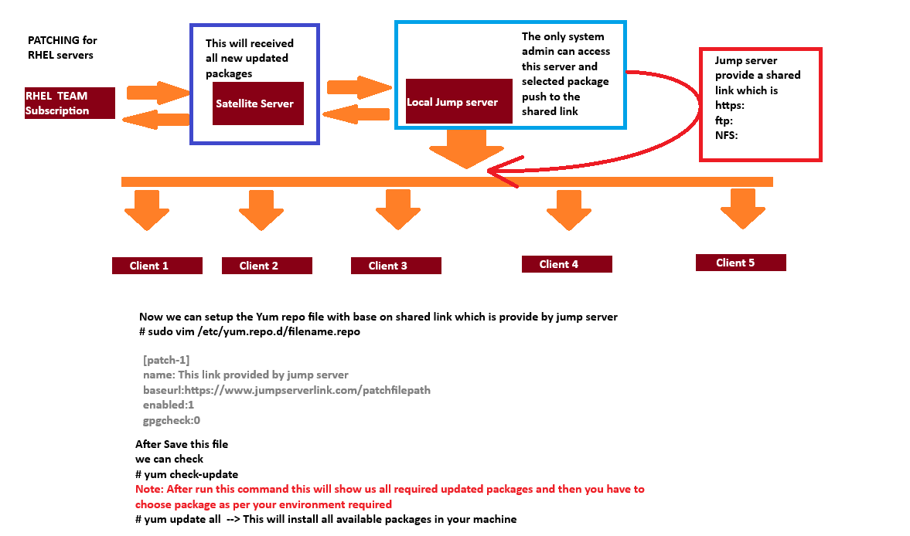

Linux Patching Steps
This page provides detailed steps for patching Linux systems on Red Hat and Ubuntu, including both full path and manual patching methods.
Introduction
Patching is a critical process in maintaining the security and stability of Linux systems. This guide covers the steps for patching Red Hat and Ubuntu systems, including how to handle both full path updates and manual installations.
Prerequisites
- Access to the terminal with root or sudo privileges.
- Internet connection for downloading updates.
- Backup of important data before applying patches.
- Registered system with Red Hat Subscription Manager for Red Hat systems.
- Knowledge of the package manager used by the distribution (YUM for Red Hat, APT for Ubuntu).
Red Hat Patching Overview
Red Hat uses the YUM package manager for managing software packages. Patching can be done through full path updates or by manually installing specific RPM packages.
Ubuntu Patching Overview
Ubuntu uses the APT package manager for managing software packages. Patching can be done through full path updates or by manually installing specific .deb packages.
Overview of Patching
Patching Setp by step process and requirement
Path management Best Practices
- Identify System that are non-complaince or unpatched (Scan System Daily)
- Prioritize patched based on the potential impact calculated risk, performance and time considerations
- Patches are usually shipped once a month or sooner
- Test patches in a staging environment before applying them to production systems
Follow the steps below to patch your Linux system effectively.
Step1:
- Check the patched availability
# dnf check-updateor# yum check-update - Get the schedule down-time from there concern team and client
- Raise the RFL or change request as per the schedule in the change management tool involing the client, higher management and all the other operations team
like:- DB team, Backup team, Application team, etc. - Collect the server per-checks details and documented them into another server
Precheck command
uname -auptimedf -hfree -mlscpulspcilsblkcat /etc/redhat-releasecat /etc/os-releasecat /etc/issuecat /etc/fstabcat /etc/hostscat /etc/resolv.confcat /etc/sysctl.confvgdisplaylvdisplaymultipath -llcat /etc/grub.cfgfdisk -lifconfig -aip addr showip route showcat /etc/sysconfig/network-scripts/ifcfg-* - Then save the precheck file output into a Main server(like:- Nim server)
- Get the details of server what type of stuff running on this server if the database is running there, so you need to engage the DB team & request to them to do "precheck" from DB end
- check whether server running in cluster or not if running as cluster, so collect the cluster information with the respective team eg- vsc/pcs cluster
- In case of bare metal server, check the console/ILO status
- Check with application/database team if they required to exclude any package like kernal, sence the application/database may not have the compatibility with the updated kernal
- Submit the change request. It will go to the CAB (change advisory board) for approval
- Once the change got schedule, we can executed a change as per the change window time
- At the change windows time you can apply the patches nmanually or using patch management tool like:- Redhat satellite server, katello forman, Ansible and other
- Automate patching using Ansible tool
Ansible playbook
vim patching.yml# write this content in this playbook for pathcing - name: patching playbook host: all become: true tasks: - name: performaning the pre-check operations script: /home/abhi/precheck.sh args: creates: /home/abhishek/precheck.sh - name: Appling all the available patches dnf: name: "*" state: latest - name: rebooting the machines reboot: reboot_timeout:6000 - name: performing the post-check operations script: /home/abhishek/postcheck.sh args: creates: /home/abhishek/postcheck.sh - name: Finding the pre & post check result file shell: (cd /home/abhishek; find . -maxdepth 1 -iname "*.txt") | cut -d'/' -f 2 register: file_to_fetch - name: Fetching the pre & post check result file fetch: src: "/home/abhishek/{{ item }}" dest: "/home/abhishek/patching_result/" flat: yes with_items: "{{ file_to_fetch.stdout_lines }}" when: file_to_fetch.stdout_lines is definedRun the playbook
ansible-playbook patching.yml -i inventory - After the patching completed, check the server status and application status
- Check the server post-checks details and documented them into another server
Postcheck command
uname -auptimedf -hfree -mlscpulspcilsblkcat /etc/redhat-releasecat /etc/os-releasecat /etc/issuecat /etc/fstabcat /etc/hostscat /etc/resolv.confcat /etc/sysctl.confvgdisplaylvdisplaymultipath -llcat /etc/grub.cfgfdisk -lifconfig -aip addr showip route show - Monitor the server health status (Use monitoring tool in case of large number of server)
- Check the server logs and application logs for any errors or issues
- Notify the concerned teams about the successful patching and any issues encountered
- Document the patching process, including any issues faced and resolutions applied
- Update the change management tool with the patching details and close the change request
Manually patch applying
Step: 1
dnf clean alloryum clean allanddnf repolistoryum repolist
Step: 2
dnf check-update -yoryum check-update -y
Step: 3
dnf update podman -yoryum update podman -y
Step: 4
If we required some package downgrade
dnf downgrade <package-name> -yoryum downgrade <package-name> -y
Step: 5
If we required some package install
dnf install <package-name> -yoryum install <package-name> -y
Step: 6
If we required some package remove
dnf remove <package-name> -yoryum remove <package-name> -y
Step: 7
If we required some package reinstall
dnf reinstall <package-name> -yoryum reinstall <package-name> -y
Step: 8
If we check install and upgrade package history
dnf historyoryum history
Step: 9
If we check install and upgrade package history details
dnf history info <transaction-id>oryum history info <transaction-id>
Step: 10
If we check install and upgrade package history details
dnf history undo <transaction-id>oryum history undo <transaction-id>
Red Hat Patching
Full Path Patching
- Ensure the system is registered with Red Hat Subscription Manager:
sudo subscription-manager register --username--password - Attach the system to a subscription:
sudo subscription-manager attach --auto - Update the system:
sudo yum update -y
Manual Patching
- Download the required RPM package from the Red Hat Customer Portal.
- Install the package using:
sudo rpm -Uvh.rpm
Ubuntu Patching
Full Path Patching
- Update the package list:
sudo apt update - Upgrade all packages:
sudo apt upgrade -y - Reboot the system if necessary:
sudo reboot
Manual Patching
- Download the required .deb package from a trusted source.
- Install the package using:
sudo dpkg -i.deb - Fix any dependency issues:
sudo apt --fix-broken install
Example: Updating a Specific Package
To update a specific package, such as nginx, use the following commands:
Ubuntu:
sudo apt install --only-upgrade nginx